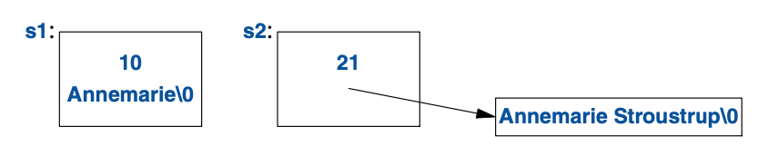
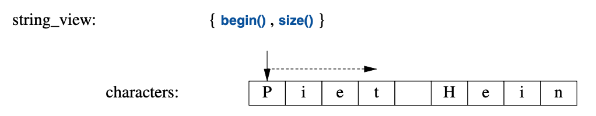

9
字符串和正则表达式
使用规范的语言。
—— 斯特伦克 和 怀特1
9.1 导言
文本操占据了多数程序的大部分工作。
C++标准库提供了一个 string 类型以解救大多数用户，
不必再通过指针进行字符串数组的 C 风格字符串操作。
string_view类型可以操作字符序列，无论其存储方式如何
（比如：在std::string或char[]中）。
此外还提供了正则表达式匹配，以便在文本中寻找模式。
正则表达式的形式与大多数现代语言中呈现的方式类似。
无论string还是regex对象，都可以使用多种字符类型（例如：Unicode）。
9.2 字符串
标准库提供了string类型，用以弥补字符串文本(§1.2.1)的不足；
string是个Regulae类型(§7.2, §12.7)，
用于持有并操作一个某种类型字符的序列。
string提供了丰富有用的字符串操作，比方说连接字符串。例如：
string compose(const string& name, const string& domain)
{
return name + '@' + domain;
}
auto addr = compose("dmr","bell−labs.com");
此处，addr被初始化为字符序列dmr@bell−labs.com。
string“加法”的意思是连接操作。
你可以把一个string、一个字符串文本、C-风格字符串或者一个字符连接到string上。
标准string有个转移构造函数，所以就算是传值返回长的string也很高效(§5.2.2)。
在大量应用中，最常见的字符串连接形式是把什么东西添加到某个string的末尾。
此功能可以直接使用+=操作。例如：
void m2(string& s1, string& s2)
{
s1 = s1 + '\n'; // 追加换行
s2 += '\n'; // 追加换行
}
这两种附加到string末尾的方式语意等价，但我更青睐后者，
对于所执行的内容来说，它更明确、简练并可能更高效。
string是可变的，除了=、+=，还支持取下标（使用 []）、取自字符串操作。
例如：
string name = "Niels Stroustrup";
void m3()
{
string s = name.substr(6,10); // s = "Stroustrup"
name.replace(0,5,"nicholas"); // name 变成 "nicholas Stroustrup"
name[0] = toupper(name[0]); // name 变成 "Nicholas Stroustrup"
}
substr()操作返回一个string，该string是其参数标示出的子字符串的副本。
第一个参数是指向string的下标（一个位置），第二个参数是所需子字符串的长度。
由于下标从0开始，s的值便是Stroustrup。
replace()操作以某个值替换一个子字符串。
本例中，子字符串是始自0，长度5的Niels；它被替换为nicholas。
最后，我将首字符替换为对应的大写字符。
因此，name最终的值便是Nicholas Stroustrup。
请留意，替代品字符串无需与被替换的子字符串长度相同。
string有诸多便利操作，诸如赋值（使用=），
取下标（使用[]或像vecor那样使用at()；§11.2.2），
相等性比较（使用==和!=），以及字典序比较（使用<、<=、>和>=），
遍历（像vector那样使用迭代器；§12.2），输入（§10.3）和流（§10.8）。
显然，string可以相互之间比较，与C-风格字符串比较（§1。7.1），
与字符串文本比较，例如：
string incantation;
void respond(const string& answer)
{
if (answer == incantation) {
// 施放魔法
}
else if (answer == "yes") {
// ...
}
// ...
}
如果你需要一个C-风格字符串（零结尾的char数组），
string为其持有的字符提供一个只读访问。例如：
void print(const string& s)
{
printf("For people who like printf: %s\n",s.c_str()); // s.c_str() 返回一个指针，指向 s 持有的那些字符
cout << "For people who like streams: " << s << '\n';
}
从定义方面讲，字符串文本就是一个 const char*。
要获取一个std::string类型的文本，请用s后缀。例如：
auto s = "Cat"s; // 一个 std::string
auto p = "Dog"; // 一个C-风格字符串，也就是： const char*
要启用s后缀，
你需要使用命名空间std::literals::string_literals（§5.4.4）。
9.2.1 string的实现
实现一个字符串类，是个很受欢迎并有益的练习。
不过，对于广泛的用途来说，就算费尽心力打磨的处女作，
也罕能与标准库的sting便利及性能匹敌。
如今，string通常使用 短字符串优化(short-string optimization)来实现。
就是说，较短的字符串值保留在string对象内部，只有较长的字符串会置于自由存储区。
考虑此例：
string s1 {"Annemarie"}; // 短字符串
string s2 {"Annemarie Stroustrup"}; // 长字符串
其内存配置将类似于这样：

当某个string的值从短字符串变成长字符串（或相反），其内存配置也将相应调整。
一个“短”字符串应该有多少个字符呢？这由实现定义，但是“14个字符左右”当相去不远。
string的具体性能严重依赖运行时环境。
尤其在多线程实现中，内存分配的代价相对高昂。
并且在使用大量长度参差不齐的字符串时将产生内存碎片。
这些因素就是短字符串优化如此普遍应用的原因。
为处理多种字符集，string实际上是采用字符类型char
的通用模板basic_string的别名：
template<typename Char>
class basic_string
{
// ... string of Char ...
};
using string = basic_string<char>;
用户可定义任意字符类型的字符串。
例如：假设我们有个日文字符类型Jchar，就可以这么写：
using Jstring = basic_string<Jchar>;
现在，就可以针对Jstring——日文字符的字符串——进行所有常规操作了。
9.3 字符串视图
针对字符串序列，最常见的用途是将其传给某个函数去读取。
此操作可以有多种方式达成，将string传值，传字符串的引用，或者是C-风格字符串。
在许多系统中，还有进一步的替代方案，例如标准之外的字符串类型。
所有这些情形中，当我们想传递一个子字符串，就要涉及额外的复杂度。
为了解决这个问题，标准库提供了string_view；
string_view基本上是个(指针，长度)对，以表示一个字符序列：

string_view为一段连续的字符序列提供了访问方式。
这些字符可采用多种方式储存，包括在string中以及C-风格字符串中。
string_view像是一个指针或引用，就是说，它不拥有其指向的那些字符。
在这一点上，它与一个由迭代器（§12.3）构成的STL pair相似。
考虑以下这个简单的函数，它连接两个字符串：
string cat(string_view sv1, string_view sv2)
{
string res(sv1.length()+sv2.length());
char* p = &res[0];
for (char c : sv1) // 一种复制方式
*p++ = c;
copy(sv2.begin(),sv2.end(),p); // 另一种方式
return res;
}
可以这样调用cat()：
string king = "Harold";
auto s1 = cat(king,"William"); // 字符串和 const char*
auto s2 = cat(king,king); // 字符串和字符串
auto s3 = cat("Edward","Stephen"sv); // const char * 和 string_view
auto s4 = cat("Canute"sv,king);
auto s5 = cat({&king[0],2},"Henry"sv); // HaHenry
auto s6 = cat({&king[0],2},{&king[2],4}); // Harold
跟接收const string&参数的compose()（§9.2）相比，
这个cat()具有三个优势：
- 它可被用于多种不同方式管理的字符序列。
- 不会为C-风格字符串参数创建临时的
string参数。 - 可以轻松的传入子字符串。
请注意sv(“string_view”)后缀，要启用它，需要：
using namespace std::literals::string_view_literals; // § 5.4.4
何必要多此一举？原因是，当我们传入Edward时，
需要从const char*构建出string_view，因而就需要给这些字符串计数。
而对于"Stephen"sv，其长度在编译期就计算。
当返回string_view时，请谨记这与指针非常相像；它需要指向某个东西：
string_view bad()
{
string s = "Once upon a time";
return {&s[5],4}; // 糟糕：返回了指向局部变量的指针
}
此处返回了一个指针，指向一些位于某个string内的字符，
在我们用到这些字符之前，这个string就会被销毁。
string_view有个显著的限制，它是其中那些字符的一个只读视图。
例如，对于一个将其参数修改为小写字符的函数，你无法使用string_view。
这种情况下，请考虑采用gsl::span或gsl::string_span(§13.3)。
string_view越界访问的行为是 未指明的(unspecified)。
如果你需要一个确定性的越界检查，请使用at()，
它为越界访问抛出out_of_range异常，
也可以使用gsl::string_span(§13.3)，或者“加点儿小心”就是了。
9.4 正则表达式
正则表达式是文本处理的强大工具。
它提供一个容易而简洁方式来描述文本中的模式
（例如：诸如TX 77845的美国邮编，或者诸如2009-06-07的ISO-风格日期）
并能够高效地发现这些模式。
在regex中，标准库为正则表达式提供了支持，其形式是std::regex类和配套函数。
作为regex风格的浅尝，我们定义并打印出一个模式：
regex pat {R"(\w{2}\s*\d{5}(-\d{4})?)"}; // 美国邮编模式: XXddddd-dddd 及变体
在任何语言中用过正则表达式的人都能发现\w{2}\s*\d{5}(-\d{4})?很眼熟。
它指定了一个模式，以两个字母\w{2}开头，其后紧跟的一些空格\s*是可选的，
接下来是五位数字\d{5}以及可选的连接号加四位数字-\d{4}。
如果你不熟悉正则表达式，这应该是个学习它的好时机
（[Stroustrup,2009], [Maddock,2009], [Friedl,1997]）。
为了表示这个模式，我用了个以R"(开头和)结尾的
原始字符串文本（raw string literal）。
这使得反斜杠和引号可直接用在字符串中(无需转义——译注)。
原始字符串特别适用于正则表达式，因为正则表达式往往包含大量的反斜杠。
如果我用了传统字符串，该模式的定义就会是：
regex pat {"\\w{2}\\s*\\d{5}(-\\d{4})?"}; // 美国邮编模式
在<regex>中，标准库为正则表达式提供了如下支持：
regex_match()：针对一个（长度已知的）字符串进行匹配（§9.4.2）。regex_search()： 在一个（任意长度的）数据流中查找匹配某个正则表达式的一个字符串（§9.4.1）。regex_replace()： 在一个（任意长度的）数据流中查找匹配某个正则表达式的那些字符串并替换之。regex_iterator()：在匹配和子匹配中进行遍历（§9.4.3）。regex_token_iterator()：在未匹配中进行遍历。
9.4.1 查找
对一个模式最简单的应用就是在某个流中进行查找：
int lineno = 0;
for (string line; getline(cin,line); ) { // 读进行缓冲区
++lineno;
smatch matches; // 保存匹配到的字符串
if (regex_search(line,matches,pat)) // 在 line 中查找 pat
cout << lineno << ": " << matches[0] << '\n';
}
regex_search(line,matches,pat)在line中进行查找，
查找任何能够匹配存储于正则表达式pat中的内容，
并将匹配到的任何内容保存在matches里。
如果未发现匹配，regex_search(line,matches,pat)返回false。
matches变量的类型是smatch。
其中的“s”代表“子（sub）”或者“字符串（string）”，
一个smatch是个承载string类型子匹配的vector。
第一个元素，此处为matches[0]，是完整的匹配。
regex_match()的结果是一个匹配内容的集合，通常以smatch表示：
void use()
{
ifstream in("file.txt"); // 输入文件
if (!in) // 检查文件是否打开
cerr << "no file\n";
regex pat {R"(\w{2}\s*\d{5}(-\d{4})?)"}; // 美国邮编模式
int lineno = 0;
for (string line; getline(in,line); ) {
++lineno;
smatch matches; // 保存匹配到的字符串
if (regex_search(line, matches, pat)) {
cout << lineno << ": " << matches[0] << '\n'; // 完整匹配
if (1<matches.size() && matches[1].matched) // 如果有子模式
// 并且匹配成功
cout << "\t: " << matches[1] << '\n'; // 子匹配
}
}
}
此函数读取一个文件并寻找美国邮编，例如TX77845和DC 20500-0001。
smatch类型是个正则表达式匹配结果的容器。
此处，matches[0]是整个匹配，而matches[1]是可选的四位数字子模式。
换行符\n可以是模式的组成部分，因此可以查找多行模式。
显而易见，如果要查找多行模式，就不该每次只读取一行。
正则表达式的语法和语意是有意这样设计的，目的是编译成状态机以便高效执行[Cox,2007]。
regex类型在运行时执行该编译过程。
9.4.2 正则表达式表示法
regex库可以识别正则表达式表示法的多个变体。
此处，我使用默认的表示法，ECMA标准用于ECMAScript（俗称JavaScript）的一个变体。
正则表达式的语法基于具备特殊意义的字符们：
| 正则表达式特殊字符 | |
|---|---|
.任意单个字符（“通配符”） |
\下一个字符具有特殊意义 |
[字符类起始 |
*零个或更多（后缀操作） |
]字符类终止 |
+一个或更多（后缀操作） |
{计数起始 |
?可选的（零或一个）（后缀操作） |
}计数终止 |
|可替换的（或） |
(分组起始 |
^行首；取反 |
)分组终止 |
$行尾 |
例如，可以指定一行文本以零或多个A开头，后跟一或多个B，
再跟一个可选的C，就像这样：
ˆA*B+C?$
可匹配的范例如下：
AAAAAAAAAAAABBBBBBBBBC
BC
B
不可匹配的范例如下：
AAAAA // 没有 B
AAAABC // 以空格开头
AABBCC // C 太多了
模式的一部分若被括在小括号中，则被当作子模式（可单独从smatch中提取）。例如：
\d+-\d+ // 无子模式
\d+(-\d+) // 一个子模式
(\d+)(-\d+) // 两个子模式
模式可借助后缀设置为可选的或者重复多次（默认有且只能有一次）：
| 重复 |
|---|
{n} 恰好n次 |
{n,} n或更多次 |
{n,m} 至少n次并且不超过m次 |
* 零或多次，即{0,} |
+ 一或多次，即{1,} |
? 可选的（零或一次），即{0,1} |
例如：
A{3}B{2,4}C*
可匹配范例如：
AAABBC
AAABBB
不可匹配范例如：
AABBC // A 不够
AAABC // B 不够
AAABBBBBCCC // B 太多了
在任意的重复符号（?、*、+和{}）后添加后缀?，
可令该模式匹配行为“懒惰”或者“不贪婪”。
就是说，在寻找模式的时候，它将寻找最短而非最长的匹配。
默认情况下，模式匹配总是寻找最长匹配；这被称为最长匹配规则（Max Munch rule），
考虑：
ababab
模式(ab)+匹配整个ababab，而(ab)+?仅匹配第一个ab。
最常见的字符分类如下：
| 字符分类 |
|---|
alnum 任意字母和数字字符 |
alpha 任意字母字符 |
blank 除了行分割符以外的任意空白字符 |
cntrl 任意控制字符 |
d 任意十进制数字字符 |
digit 任意十进制数字字符 |
graph 任意绘图字符 |
lower 任意小写字符 |
print 任意可打印字符 |
punct 任意标点符号 |
s 任意空白字符 |
space 任意空白字符 |
upper 任意大写字符 |
w 任意成词字符（字母数字字符外加下划线） |
xdigit 任意十六进制数字字符 |
在正则表达式中，字符分类的类名必须用中括号[: :]括起来。
例如[:digit:]匹配一个十进制数字字符。
另外，要代表一个字符分类，它们必须被置于一对中括号[]中。
有多个字符串分类支持速记表示法：
| 字符分类简写 | ||
|---|---|---|
\d |
一个十进制数字字符 | [[:digit:]] |
\s |
一个空白字符（空格、制表符等等） | [[:space:]] |
\w |
一个字母（a-z）或数字字符（0-9）或下划线（_） |
[_[:alnum:]] |
\D |
非\d |
[^[:digit:]] |
\S |
非\s |
[^[:space:]] |
\W |
非\w |
[^_[:alnum:]] |
此外，支持正则表达式的语言常常会提供：
| 字符分类简写 | ||
|---|---|---|
\l |
一个小写字符 | [[:lower:]] |
\u |
一个大写字符 | [[:upper:]] |
\L |
非\l |
[^[:lower:]] |
\U |
非\u |
[^[:upper:]] |
为了最优的可移植性，请使用字符分类名而非这些简写。
作为一个例子，请考虑写一个模式以描述C++的标志符： 一个下划线或字母，后跟一个可能为空的序列，该序列由字母、数字字符或下划线组成。 为阐明细微的差异，我列出了几个错误的范例：
[:alpha:][:alnum:]* // 错误： ":alpha:"集合中的字符后跟...
[[:alpha:]][[:alnum:]]* // 错误： 不接受下划线 （'_' 不是字母）
([[:alpha:]]|_)[[:alnum:]]* // 错误： 下划线也不属于 alnum
([[:alpha:]]|_)([[:alnum:]]|_)* // OK：但略显笨拙
[[:alpha:]_][[:alnum:]_]* // OK：在字符分类里包括了下划线
[_[:alpha:]][_[:alnum:]]* // 也 OK
[_[:alpha:]]\w* // \w 等价于 [_[:alnum:]]
最后，这里有个函数使用regex_match()（§9.4.1）的最简形式测试某字符串是否标志符：
bool is_identifier(const string& s)
{
regex pat {"[_[:alpha:]]\\w*"}; // 下划线或字母
// 后跟零或多个下划线、字母、数字字符
return regex_match(s,pat);
}
注意，使用在常规字符串文本里的双反斜杠用于引入一个反斜杠。 可用原始字符串文本以缓解特殊字符带来的麻烦。例如：
bool is_identifier(const string& s)
{
regex pat {R"([_[:alpha:]]\w*)"};
return regex_match(s,pat);
}
以下是一些模式的范例：
Ax* // A, Ax, Axxxx
Ax+ // Ax, Axxx 而非 A
\d-?\d // 1-2, 12 而非 1--2
\w{2}-\d{4,5} // Ab-1234, XX-54321, 22-5432 数字字符包含在\w中
(\d*:)?(\d+) // 12:3, 1:23, 123, :123 而非 123:
(bs|BS) // bs, BS 而非 bS
[aeiouy] // a, o, u 英文元音字母, 而非 x
[ˆaeiouy] // x, k 不是英文元音字母, 而非 e
[aˆeiouy] // a, ˆ, o, u 英文元音字母或者 ˆ
潜在的以sub_match形式表示的group（子模式）由小括号界定。
如果你需要一对小括号但却不想定义一个子模式，要使用(?:而非常规的(。例如：
(\s|:|,)*(\d*) // 可选的空白字符、冒号、和/或逗号，其后跟随一个可选的数字
假设我们不关心数字之前那些字符（比方说是分隔符之类的），就可以这么写：
(?:\s|:|,)*(\d*) // 可选的空白字符、冒号、和/或逗号，其后跟随一个可选的数字
这样可以避免正则表达式引擎存储第一个字符：采用(?:的这个版本只有一个子模式。
| 正则表达式群组示例 | |
|---|---|
\d*\s\w+ |
无群组（子模式） |
(\d*)\s(\w+) |
两个群组 |
(\d*)(\s(\w+))+ |
两个群组（群组不能嵌套） |
(\s*\w*)+ |
一个群组；一个或更多子模式； 只有最后一个子模式保存为 sub_match |
<(.*?)>(.*?)</\1> |
三个群组；\1的意思是（同群组1） |
表中最后一个模式在解析XML的时候非常好用。它查找 标签/尾标签 的记号。
注意，我为标签和尾标签间的子模式用了一个不贪婪匹配（懒惰匹配），.*?。
如果我用了常规的.*，以下输入将引发一个问题：
Always look on the <b>bright</b> side of <b>life</b>.
针对第一个子模式的贪婪匹配将匹配到第一个<和最后一个>。
那也是正确的行为，但却不太可能是程序员想要的。
有关正则表达式更详尽的阐述，请见 [Friedl,1997]。
9.4.3 迭代器
可以定义一个regex_iterator去遍历一个字符序列，寻找符合某个模式的匹配。
例如，可使用sregex_iterator（即regex_iterator<string>），
去输出某个string中所有空白字符分割的单词：
void test()
{
string input = "aa as; asd ++eˆasdf asdfg";
regex pat {R"(\s+(\w+))"};
for (sregex_iterator p(input.begin(),input.end(),pat); p!=sregex_iterator{}; ++p)
cout << (*p)[1] << '\n';
}
输出是：
as
asd
asdfg
我们丢掉了第一个单词，aa，因为它前面没有空白字符。
如果把模式简化成R"((\w+))"，就会得到：
aa
as
asd
e
asdf
asdfg
regex_iterator是双向迭代器，
故无法将其在（仅提供输入迭代器的）istream上直接遍历。
另外，也无法借助regex_iterator执行写操作，
regex_iterator默认值（regex_iterator{}）是唯一可能的序列末尾。
9.5 忠告
- [1] 用
std::string去持有字符序列；§9.2；[CG: SL.str.1]。 - [2] 多用
string，而非C-风格的字符串函数；§9.1。 - [3] 用
string去声明变量和成员，而非用作基类；§9.2。 - [4] 以传值方式返回
string（依赖转移语意）；§9.2，§9.2.1。 - [5] 以直接或间接的方式，通过
substr()读子字符串，replace()写子字符串；§9.2。 - [6]
string可按需变长或缩短；§9.2。 - [7] 当你需要越界检查的时候，用
at()而非迭代器或[]；§9.2。 - [8] 当你需要优化速度，用迭代器和
[]，而非at()；§9.2。 - [9]
string输入不会溢出；§9.2，§10.3。 - [10] （仅）在你迫不得已的时候，
使用
c_str()为string生成一个C风格字符串的形式；§9.2。 - [11] 用
stringstream或者通用的值提取函数（如to<X>） 做字符串的数值转换；§10.8。 - [12]
basic_string可用于生成任意类型字符的字符串；§9.2.1。 - [13] 把
s后缀用于字符串文本的意思是使之成为标准库的string； §9.3 [CG: SL.str.12]。 - [14] 在待读取的字符序列存储方式多种多样的时候，
以
string_view作为函数参数；§9.3 [CG: SL.str.2]。 - [15] 在待写入的字符序列存储方式多种多样的时候，以
gsl::string_span作为函数参数；§9.3 [CG: SL.str.2] [CG: SL.str.2]。 - [16] 把
string_view看作附有长度的指针；它并不拥有那些字符；§9.3。 - [17] 把
sv后缀用于字符串文本的意思是使之成为标准库的string_view；§9.3。 - [18] 对于绝大多数常规的正则表达式，请使用
regex;§9.4。 - [19] 除了最简单的模式，请采用原始字符串文本；§9.4。
- [20] 用
regex_match()去匹配完整的输入；§9.4，§9.4.2。 - [21] 用
regex_search()在输入流中查找模式；§9.4.1。 - [22] 正则表达式的写法可以针对多种标准进行调整；§9.4.2。
- [23] 默认的正则表达式写法遵循 ECMAScript；§9.4.2。
- [24] 请保持克制，正则表达式很容易沦为只写语言；§9.4.2。
- [25] 记住，
\i可以表示同前面某个子模式；§9.4.2。 - [26] 可以用
?把模式变得“懒惰”；§9.4.2。 - [27] 可以用
regex_iterator在流中遍历查找模式；§9.4.3。
1. 出自 上海译文出版社 1992年12月 出版的《英文写作指南》（陈一鸣 译），引用内容出现在该书第157页的“提示二十一”。 —— 译者注 ↩